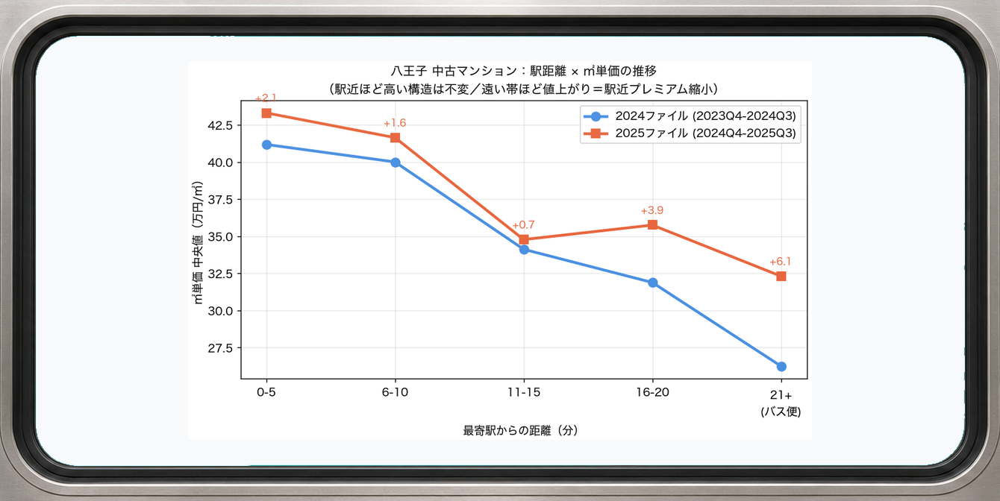
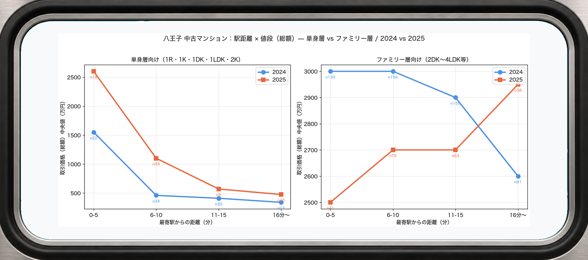
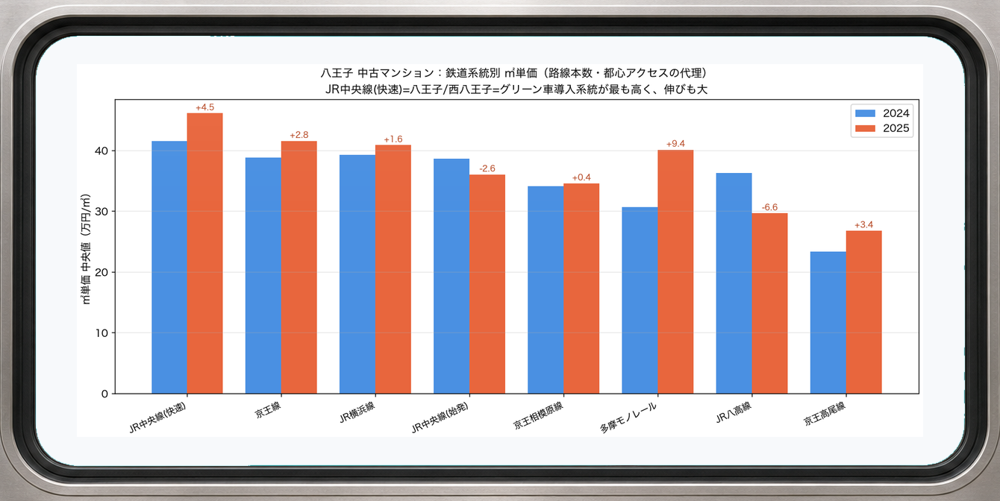
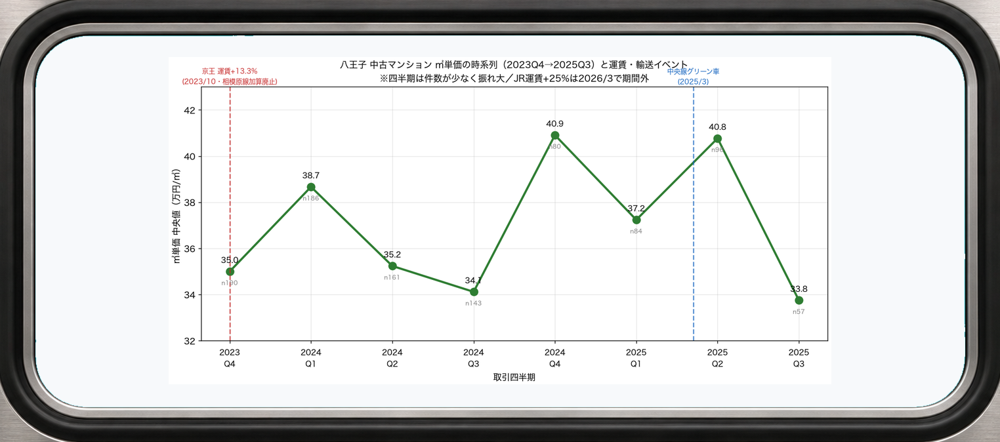
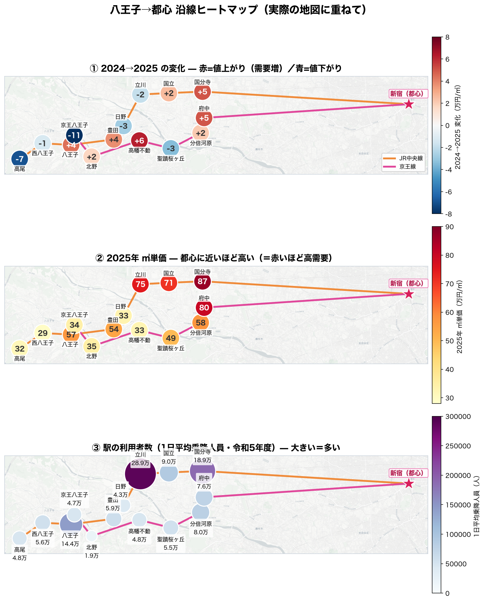
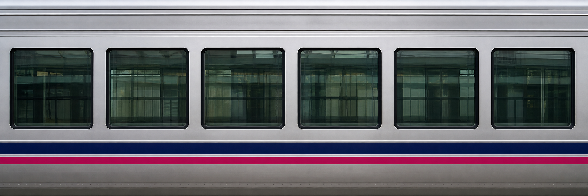
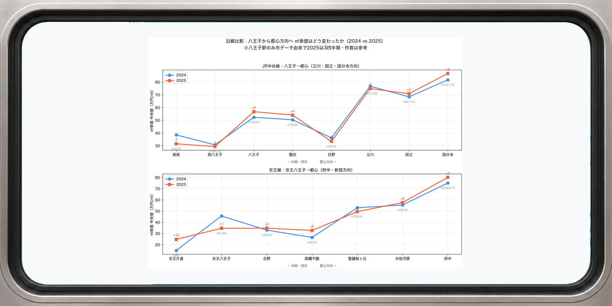
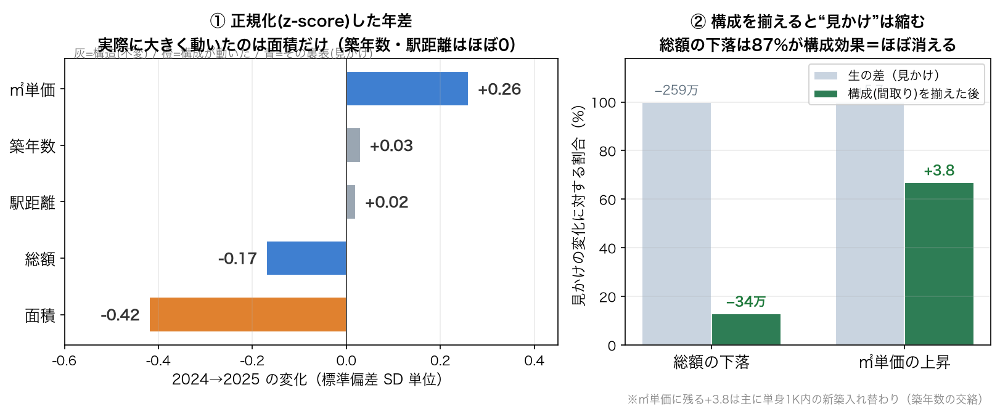
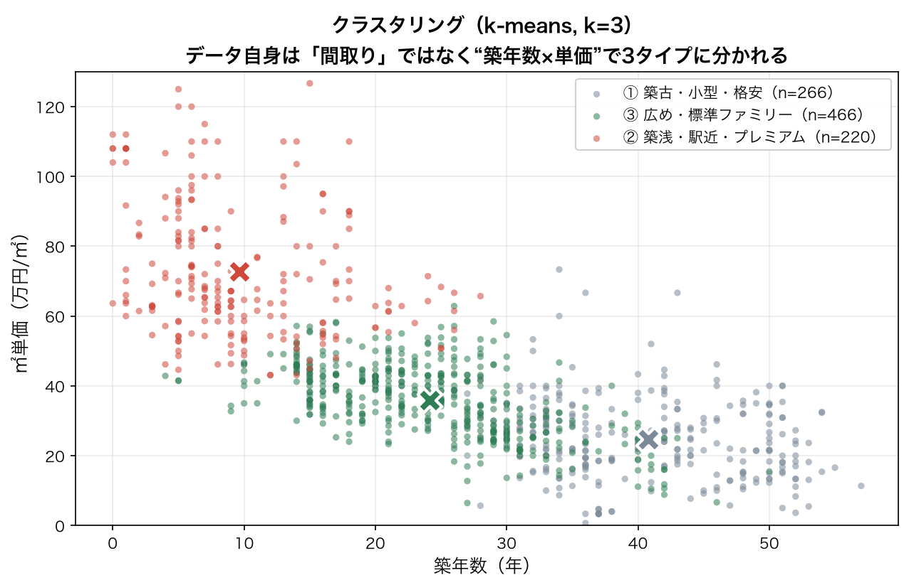

情報科学セミナーI（三木研）｜2026-07-02
国土交通省「不動産取引価格情報」を用いて、八王子市とその沿線（京王線・JR中央線）の中古マンション価格が どんな要因で決まり、2024→2025でどう変わったかを分析した。テーマは研究室の方針「分析＝区別する／因果を明確にする」。
問い：八王子の中古マンション価格を動かしている本当の要因は「広さ・立地・築古・駅アクセス」のどれか。そして 2024→2025 で価格の決まり方は変わったか。
素直に「価格 〜 全項目」を回すと、面積と間取りのように中身が重複した変数が混ざって係数が壊れる（＝“素直が仇”）。先に問いを立て、層別・交絡に注意して要因を切り分ける。なお「立地」は2階層で見る — 八王子“内”は物件差（面積・築年・駅距離）、沿線スケールは“都心方向の位置”として別に扱う。
「A と B が直接つながっている」と思ったら、実は裏で C が両方を動かしていた——これが交絡。混ぜたまま平均や回帰を出すと、結論を丸ごと誤る。今回の八王子データでも、生の数字を追うと「値下がり」「駅遠でも売れる」と読めてしまうが、裏で効く 3 つの変数を “区別（層別）” すると景色が変わった。
| データ | 件数 | 取引時期 | 備考 |
|---|---|---|---|
| 八王子中古マンション2024.csv | 689 | 2023Q4–2024Q3 | 建ぺい率・用途・改装が大量欠損 |
| 八王子中古マンション2025.csv | 322 | 2024Q4–2025Q3 | 建ぺい率・容積率はほぼ揃う |
| 沿線14駅（京王線・中央線） | 約1,500 | 2024–2025 | reinfolib 駅別CSV。中古マンションのみ抽出 |
出典：国土交通省「不動産情報ライブラリ（不動産取引価格情報）」／文字コード Shift-JIS。前処理で 外れ値（100万円未満）・調停/競売等・距離の範囲表記・築年→築年数 を整理。
全体の総額中央値は 2,600万 → 2,300万 と下落したように見える。だがこれは売れた物件の構成が変わっただけ。間取りで分けると真逆になる。
同じ構成シフト（安い新築1Kの増加）が、総額の中央値を押し下げると同時に、平均㎡単価を押し上げる。1つの原因が「値下がり」と「値上がり」の両方の見かけを同時に作っている——だから総額も単価も、そのままでは信じられない。
🧩 層別の定義：間取りで2つに分ける（＝クラスタリングではなく、人が決めた基準で機械的に分けた「層別」）
この2層を主役に比較する。1LDK・1DK・2K 等の中間タイプは「中間層」として別扱い。単身層＝築古・小型で投資/単身向け、ファミリー層＝広め・複数部屋で実需の主役。
| 2024 | 2025 | |
|---|---|---|
| ㎡単価(中央) | 23万 | 39万 |
| 取引割合 | 13% | 23% |
投資マネー流入で ㎡単価+70%・取引急増。※新築1Kは件数が少なく（築0-5年 2→13件）、倍率そのものは留保。
| 2024 | 2025 | |
|---|---|---|
| ㎡単価(中央) | 38.3万 | 38.3万 |
| 総額(中央) | 2,900万 | 2,700万 |
㎡単価は横ばい（総額の微減は面積の小型化ぶん）。
どちらの年も「駅近ほど高い」構造は不変（右肩下がり）。ただし値上がり幅は遠い帯ほど大きく、駅近と駅遠の差＝駅近プレミアムは縮小した。

層で分けると動きは真逆。ファミリーは全体（全距離の中央値）では横ばいでも、距離帯で割ると内部で逆向きに動く——単身は駅近ほど値上がり、ファミリーは駅近が下落・駅遠が逆転上昇（線がクロス）。

乗り入れ路線が多い駅ほど㎡単価が高い。3路線の八王子が突出し、伸びも最大。系統別ではグリーン車が入ったJR中央線(快速)が最高値かつ最も上昇。
| 路線数 | 2024 | 2025 |
|---|---|---|
| 1路線 | 33.3万 | 35.8万 |
| 2路線 | 36.8万 | 38.5万 |
| 3路線（八王子・京王多摩センター） | 49.2万 | 55.4万 |

時期の綾：京王 2023/10 に28年ぶり+13.3%値上げ（相模原線は加算運賃廃止＝実質値下げ）／2025/3 中央線グリーン車（+750円/日）／2026/3 JR運賃+約25%（期間外）。

八王子だけでなく京王線・中央線の沿線で見ると、都心に近い駅ほど㎡単価が高く（勾配）、2024→2025でその傾きがさらに急になった。都心寄り（国分寺・府中・立川・国立）は値上がり、外側（高尾・京王八王子・日野）は値下がり。



価格が都心寄りに集中した背景として、同時期の交通・移動手段の変化が考えられる。両方向に効いているのがポイント。
| 向き | 要因 | 内容 |
|---|---|---|
| 都心集中を後押し | 中央線グリーン車(2025/3) | 座って都心通勤。都心アクセスの価値↑ |
| 〃 | 都心マンション高騰の波及 | 投資用1Kが駅近に流入（単身層の高騰） |
| 郊外を後押し（逆風の名残） | 電動アシスト自転車の普及 | 駅遠のハンデを緩和（ファミリー郊外の粘り） |
| 〃 | コロナ後のリモートワーク | 2021〜22の駅離れ・郊外化。2024〜25は出社回帰で逆流局面 |
| 郊外に不利 | 路線バス「2024年問題」減便 | バス便物件が不便化（西東京バス系統見直し） |
2024と2025を同じものさし（両年まとめて標準化）で並べ、さらに構成（間取りミックス）を揃えて比べると、見かけの派手な動きが交絡だったことが数字で確認できる。

ここまでは「間取り」という人間が決めた基準で層別してきた。最後に基準を与えず、k-means（k=3）でデータ自身にグループ分けさせる（特徴量：面積・築年数・駅距離・㎡単価）。

| クラスタ（データ自動） | 件数 | 面積 | 築年数 | 駅距離 | ㎡単価 | 総額 | 間取り内訳 |
|---|---|---|---|---|---|---|---|
| ② 築浅・駅近・プレミアム | 220 | 57㎡ | 10年 | 7分 | 73万 | 3,970万 | ファミリー69% / 単身18% |
| ③ 広め・標準ファミリー | 466 | 81㎡ | 24年 | 13分 | 36万 | 2,867万 | ファミリー96% |
| ① 築古・小型・格安 | 266 | 42㎡ | 41年 | 9分 | 25万 | 1,001万 | ファミリー47% / 単身42% |
結論の前に「見かけの変化が本物か」を確かめる。市場の主役 ファミリー(2LDK+)だけで層別回帰し、単身1Kの構成交絡を剥がした（標準化β＝単位をそろえた“効き”の比較）。
| 標準化β（総額） | 2024 | 2025 | 読み |
|---|---|---|---|
| 築年数（築古） | −0.71 | −0.70 | 最大の要因・ほぼ不変 |
| 駅距離（駅アクセス） | −0.28 | −0.21 | 中程度・やや弱まる |
| 面積（広さ） | +0.24 | +0.28 | 中程度・不変 |
| ㎡単価 中央値（万円/㎡） | 38.3 | 38.3 | 横ばい |
Q1. 価格を動かす“本当の要因”は「広さ・立地・築古・駅アクセス」のどれか？
ファミリー市場では 築古（築年数）が最大の決定要因（標準化β −0.71）。広さ（面積）と駅アクセス（駅距離）は中程度。立地は八王子“内”では変数化しておらず、沿線スケールでのみ都心方向の位置が強く効く。※プールド（全物件）だと面積が大きく見えるが、これは極小の1Kが面積の効きを水増ししていたため。
Q2. 2024→2025 で価格の決まり方は変わったか？
決まり方はほぼ変わっていない。ファミリーの㎡単価は 38.3→38.3 で横ばい、築古・広さの効きも不変。最も確からしい変化は「駅アクセスの効きがやや弱まった」こと（駅距離ペナルティ −61→−42万/分。縮小の方向は全体・ファミリー両方で一致するが、2025はnが小さく、年をまたぐ係数差は交互作用項で検定していないため幅は断定しない）。「単価が上がった」「築古の減価が緩和した」という見かけの大変化は、単身1K（新築）の流入による構成交絡で、価格形成そのものの変化ではない。空間的には値上がりが都心方向へ集中した（別軸の発見・5章）。
ひとことで：交絡を剥がすと、八王子の中古マンション価格は依然「築古が主役／決まり方はほぼ不変」。実際に動いたのは 駅アクセスの効きがわずかに弱まったこと と 取引の中身が新築1Kへシフトしたこと の2点で、見かけの派手な変化はすべて構成効果だった。
空間的には、八王子を含む多摩エリアの中古マンションは 「都心アクセスの良い駅を頂点に、郊外へ向かって価値がなだらかに逓減する」 構造。2024→2025 で値上がりは都心寄りの駅に集中した（＝5章の変化ヒートマップ）。
出典：国土交通省 不動産情報ライブラリ／ JR東日本 2025年3月ダイヤ改正・ 京王 2023年10月運賃改定・ 自転車の青切符(2026/4)・ 電動アシスト自転車 販売動向・ 路線バス減便(帝国データバンク)
情報科学セミナーI｜八王子中古マンション分析